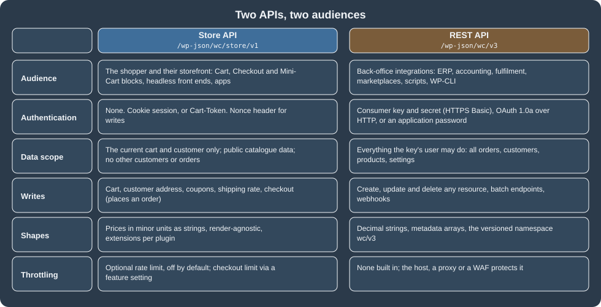
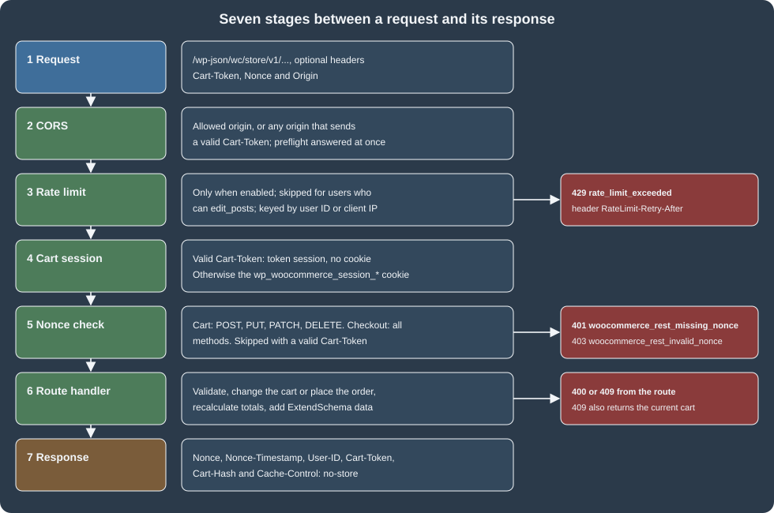
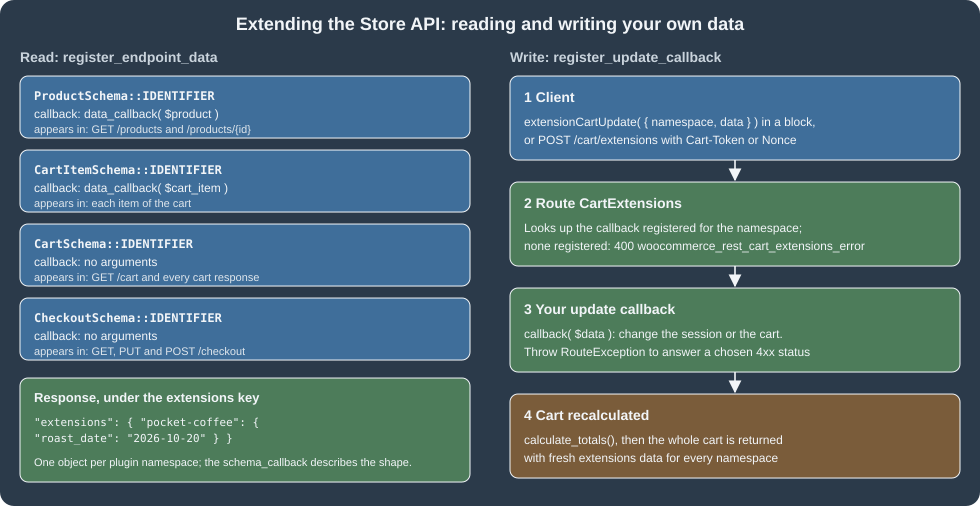

Store API
|
This content was generated with the assistance of AI and should be verified against the official documentation before being relied on in production. |
The Store API is the public, customer-facing REST API of WooCommerce. It is what the Cart, Checkout and Mini-Cart
blocks call to read products, change the cart and place the order, and it is the supported way to build any other
storefront on a WooCommerce store: a headless front end, a mobile app, a kiosk, a chat assistant. It lives in the
namespace wc/store/v1 of the WordPress REST API, needs no API keys, and only ever shows and changes the data of the
current shopper: their cart, their addresses, their own order. This page covers every route of WooCommerce 11.2.1, the
two ways a client identifies a cart (the Nonce header and the Cart-Token header), cross-origin access, rate
limiting, the extension points (ExtendSchema and cart update callbacks) and the hooks that run during cart and
checkout requests, and compares the API with the authenticated REST API v3. The version baseline is WordPress 7.1.3 with
WooCommerce 11.2.1 (released 2026-10-09), checked on 2026-10-27. The Store API is part of WooCommerce core, so it is
available on every self-hosted store, including those that never use the block checkout.
The running example is the Pocket Coffee shop built as a headless storefront: a small plugin, pocket-coffee-storeapi,
adds the roast date to products and cart lines, a gift wrap option that adds a fee, and rate limiting. Everything below
was run against a local WooCommerce 11.2.1 store (HPOS enabled, PHP 8.3.36, MariaDB 11.8.9), and the outputs shown are
the observed ones, trimmed where marked. Orders, sessions and the data stores behind the cart are explained in
CRUD Objects and Data Stores, the blocks that consume this
API in Cart and Checkout Blocks, checkout fields in
Additional Checkout Fields, the authenticated API in
REST API and Webhooks, and the PHP language basics on the
PHP section of this site.
Store API versus REST API
WooCommerce ships two REST APIs on purpose. The REST API (wc/v3) is for back-office systems that act as a trusted
administrator; the Store API (wc/store/v1) is for the shopper. They differ in who may call them, what they can see and
how their data is shaped.

Store API (wc/store/v1) |
REST API v3 (wc/v3) |
|
|---|---|---|
Who calls it |
The shopper’s browser, a headless storefront, a mobile app, a block |
An ERP, an accounting or fulfilment system, a marketplace connector, a script |
Authentication |
None. A cart session (cookie) or a |
Consumer key and secret over HTTPS, OAuth 1.0a over HTTP, or any WordPress REST authentication such as application passwords |
What it can read |
Public catalogue data; the current cart; the current customer’s addresses; an order only when the order key and billing email are supplied |
Everything the authenticated user may see: all orders, customers, coupons, reports and settings |
What it can write |
The cart, the customer’s addresses, coupons, the shipping rate, the checkout and its payment |
Any resource, with batch endpoints |
Data shape |
Prices as strings in the smallest currency unit with the currency fields next to them, no HTML where avoidable, an |
Decimal price strings, a |
Throttling |
Optional rate limiting, off by default |
None built in |
Typical Pocket Coffee use |
The app shows beans, builds the basket and pays |
The accounting system pulls paid orders and updates stock |
Choose by the question "does the caller act as a shopper or as the store?". Anything that needs another customer’s data,
settings, reports or every order belongs to the REST API and must keep its keys on a server. Anything a shopper does
for themselves belongs to the Store API, and the same code can then run in a browser. A plugin that needs a new
shopper-facing route can register one with register_rest_route() and follow the Store API patterns, but it does not
need to be part of the Store API: to add data to existing responses use ExtendSchema (below).
The basics
-
Namespace and versions. Routes are under
/wp-json/wc/store/v1/.v1is the only version; a request to/wc/store/without a version is served asv1. With plain permalinks the same route is/?rest_route=/wc/store/v1/cart. -
Format. Requests and responses are JSON. There is no
.jsonsuffix.OPTIONSon a route returns its JSON schema, which is the quickest way to see every field. -
Render-target agnostic. The API returns data, not markup. Prices are strings in the smallest currency unit (
"890"is 8.90 EUR, withcurrency_minor_unit2 andcurrency_codeEURbeside them), and some messages still contain HTML entities (",€) because they are written for display; decode them before showing them. -
Scope. Data returned reflects the current shopper. The API cannot list other customers or orders, cannot change settings, and does not expose sensitive store data.
-
Pagination. Collections accept
page(default 1) andper_page(default 10, maximum 100) and answer withX-WP-Total,X-WP-TotalPagesand aLinkheader carryingnextandprev. A request for two beans per page on the test store returnedX-WP-Total: 41,X-WP-TotalPages: 21and theLinkentry<http://localhost:8081/wp-json/wc/store/v1/products?per_page=2&page=2>; rel="next". -
Status codes.
200for reads and updates,201for a created cart item,207for a batch with mixed outcomes,400for invalid input,401and403for a missing or invalid nonce,404for a missing resource,409for a conflict (the response includes the current cart),429when rate limited,500for a server error. A successfulDELETE /cart/itemsreturned200and the cart in 11.2.1, although the documentation describes204for deletes. -
Errors. An error is
{"code": "...", "message": "...", "data": {"status": 400}}. Validation errors from the REST layer userest_invalid_paramwith adetailsobject per parameter; domain errors use codes such aswoocommerce_rest_cart_invalid_product.
SITE=http://localhost:8081
curl -s "$SITE/wp-json/wc/store/v1/products?search=Storeapi&per_page=1&orderby=price&order=asc"The trimmed answer for the test product (the roast date under extensions is added by the plugin of this page):
[
{
"id": 67,
"name": "Pocket Coffee Storeapi Test Beans",
"slug": "pocket-coffee-storeapi-test-beans",
"sku": "PC-ETH-WHL-250-TEST",
"type": "simple",
"is_in_stock": true,
"on_sale": false,
"prices": {
"price": "890",
"regular_price": "890",
"sale_price": "890",
"currency_code": "EUR",
"currency_minor_unit": 2
},
"add_to_cart": { "text": "Add to cart", "minimum": 1, "maximum": 10, "multiple_of": 1 },
"extensions": { "pocket-coffee": { "roast_date": "2026-10-20" } }
}
]Endpoint reference
The list below is the route table of the 11.2.1 test store, read from GET /wp-json/wc/store/v1 and cross-checked with
the official resource pages. Writes to the cart need a Nonce or a Cart-Token header, and every checkout request
does (see the next section).
Products and catalogue (read only)
| Route | Methods | Notes |
|---|---|---|
|
GET |
List with |
|
GET |
One product. Variable products include |
|
GET |
Aggregates for the same filters as |
|
GET |
Global product attributes and their terms. |
|
GET |
Taxonomies with counts. |
|
GET |
Reviews, filterable by |
On the test store GET /products/collection-data?calculate_price_range=true&calculate_stock_status_counts=true answered with
a price_range of {"min_price": "0", "max_price": "4900", ...} in minor units and an instock count, and
/products/categories listed the categories with their count.
Cart
| Route | Methods | Notes |
|---|---|---|
|
GET |
The whole cart: |
|
POST |
|
|
POST |
|
|
POST |
|
|
GET, POST, DELETE |
The same operations as REST-style collection calls; |
|
GET, POST, PUT, PATCH, DELETE |
One line. |
|
POST |
|
|
GET, POST, DELETE (collection); GET, DELETE (one) |
Collection-style coupon calls. |
|
POST |
|
|
POST |
|
|
POST |
Runs an extension’s update callback (see below). |
The routes that change the cart (add-item, update-item, remove-item, coupons, update-customer,
select-shipping-rate, extensions) return the whole cart, so a client can replace its state with the response.
Checkout, order and batch
| Route | Methods | Notes |
|---|---|---|
|
GET, PUT, PATCH, POST |
|
|
POST |
Pays an existing unpaid order (the "pay for order" flow of the documentation); it is authorized with the order key and billing email, like |
|
GET |
An order’s details. Needs |
|
POST |
Up to 25 sub-requests in one call: |
The shopper-lists routes added in 10.9.0 are not registered on the test store (they sit behind a feature) and are not
covered here.
A batch with a good and a bad sub-request returned HTTP 207 and one result per request, and a path outside the Store API was refused outright (observed):
batch (update-item to 3, apply an unknown coupon) -> 207 [(200, ok), (400, woocommerce_rest_cart_coupon_error)]
batch with path /wp/v2/users -> 400 woocommerce_rest_invalid_pathThe path check is the fix for CVE-2026-3589, a cross-site request forgery through the batch endpoint of WooCommerce 5.4.0 to 10.5.2 that let an unauthenticated visitor make a logged-in administrator’s browser call non-store REST routes; the fix shipped in 10.5.3 on 2026-03-02. Keep stores updated: the Store API is public and attackers read the same source.
Total mismatch on checkout (409)
Since 11.1.0 the client can send the total it displayed to the shopper as expected_total (a string in the smallest
currency unit). If the recalculated total is higher, the API refuses the order with 409, before any order is created,
and returns the current cart so the app can show the new price. Omit the field for flows that cannot know the final
total. A request that sent 100 for a cart of 22.30 EUR was refused like this:
{
"code": "woocommerce_rest_checkout_total_mismatch",
"message": "The order total changed from €1.00 to €22.30 while you were checking out. Please review the updated total and place your order again.",
"data": { "expected_total": 100, "actual_total": 2230, "status": 409, "cart": { "...": "the whole cart" } }
}Sessions, Cart-Token and Nonce
A cart belongs to a session. The Store API supports two ways of binding a request to it, and a request to a route that changes data must present one of them.

-
Cookie session plus
Nonce. A browser keeps thewp_woocommerce_session_*cookie that WooCommerce sets, and sends theNonceheader of the last response with every write. The nonce is a standard WordPress nonce for the actionwc_store_api(wp_create_nonce( 'wc_store_api' )), tied to the user (guests included) and refreshed on every response, so the client must store the newNonceafter each call. -
Cart-Token. A cookie-less client sends theCart-Tokenheader returned by the firstGET /cart. A valid token selects the cart and replaces the nonce check completely, which is why headless clients use it. The token is the only thing that identifies the cart, so treat it as a secret: use HTTPS, do not log it, do not put it in a URL.
What needs which header
| Request | Needs | Otherwise |
|---|---|---|
|
Nothing |
Always allowed, cacheable data |
|
Nothing (a cart session is created) |
The response carries the |
|
A valid |
401 |
Any method on |
A valid |
The same 401 or 403 |
|
The order |
401 |
These are the results of the access attempts on the test store (observed, add-item on a fresh guest cart):
| Request headers | Result | Body |
|---|---|---|
none |
401 |
|
|
201 |
The cart, with the line added. The response sets the session cookie |
|
403 |
|
|
201 |
The cart, with the line added. No nonce needed. |
|
401 |
|
|
200 |
The checkout state, status |
The official documentation says all checkout requests need a nonce or token, and that only cart writes (not cart reads) do; the table above matches that.
Response headers
Every successful cart or checkout response carries these headers; error responses caused by a failed cart session load do
not include Cart-Token and Cart-Hash.
HTTP/1.1 200 OK
Nonce: cf77eaf9d3
Nonce-Timestamp: 1793126602
User-ID: 0
Cache-Control: no-store
Cart-Token: eyJhbGciOiJIUzI1NiIs...
Cart-Hash:| Header | Meaning |
|---|---|
|
A fresh nonce for the action |
|
The time the nonce was issued. |
|
The WordPress user ID of the caller, |
|
Cart responses must never be cached by a proxy or CDN. |
|
The token for header-based cart identification. |
|
A hash of the cart contents; empty for an empty cart. Change detection for clients. |
What a Cart-Token is
A Cart-Token is a JSON Web Token (HS256) signed with a key derived from the site’s salts. Its payload holds the session
customer ID (user_id, which for a guest is a generated value starting with t_), the expiry (exp), the issuer
(iss, always store-api) and the issue time (iat). The expiry is the WooCommerce session lifetime, two days by
default and adjustable with the wc_session_expiration filter. Decoding the token of the test store gave (the user ID is a
throw-away guest identifier):
{ "user_id": "t_065f2b7cc914c3e73c378a6410f15e", "exp": 1793299134, "iss": "store-api", "iat": 1793126334 }exp minus iat is 172800 seconds, two days. A token that does not validate is ignored: a request that sent a garbage
value in Cart-Token was answered 200 with a new token and a new, empty cart, so a client must compare tokens and
detect that its cart was lost. If a store changes its salts, all tokens in the wild stop validating.
Disabling the nonce check
On development sites the check can be turned off for testing REST clients:
add_filter( 'woocommerce_store_api_disable_nonce_check', '__return_true' );Never enable that on a production store: the nonce is the protection against cross-site request forgery for cookie sessions. For the Cart-Token the documentation is at Cart tokens.
Cross-origin access
Store API responses carry their own CORS headers, because some routes return personal data. The default WordPress
allow-all behaviour is replaced: an origin gets Access-Control-Allow-Origin only if it is an allowed origin (the WordPress
allowed_http_origins filters extend the list), or the request has a valid Cart-Token, or it is a preflight request.
The test store answered a preflight like this and gave a cross-origin GET /cart without a token no allow-origin header
(observed):
OPTIONS /wp-json/wc/store/v1/cart/add-item Origin: https://app.example.com
HTTP/1.1 200 OK
Access-Control-Allow-Headers: Authorization, X-WP-Nonce, Content-Disposition, Content-MD5, Content-Type, Cart-Token, Nonce
Access-Control-Allow-Methods: OPTIONS, GET, POST, PUT, PATCH, DELETE
Access-Control-Allow-Credentials: true
Access-Control-Expose-Headers: X-WP-Total, X-WP-TotalPages, Link, Cart-Token
Access-Control-Allow-Origin: https://app.example.com
Vary: OriginOnly Cart-Token is exposed to browser scripts, not Nonce, so a headless front end on another origin is expected
to use the Cart-Token flow.
A headless Pocket Coffee checkout
The sequence below is the flow of a Pocket Coffee app: open a cart, add two bags of beans, send the address, choose the
shipping rate, ask for gift wrap through the plugin’s update callback and place the order. Each request sends the
Cart-Token and nothing else.
The same flow with curl (the token is shortened in the output):
SITE=http://localhost:8081
API="$SITE/wp-json/wc/store/v1"
TOKEN=$(curl -s -D - -o /dev/null "$API/cart" | tr -d '\r' | awk -F': ' 'tolower($1)=="cart-token"{print $2}')
JSON='Content-Type: application/json'
curl -s -X POST "$API/cart/add-item" -H "Cart-Token: $TOKEN" -H "$JSON" -d '{"id": 67, "quantity": 2}'
curl -s -X POST "$API/cart/update-customer" -H "Cart-Token: $TOKEN" -H "$JSON" -d '{
"billing_address": {"first_name": "Ada", "last_name": "Lovelace", "address_1": "Calle Mayor 1", "city": "Madrid",
"state": "M", "postcode": "28013", "country": "ES", "email": "ada@example.test"},
"shipping_address": {"first_name": "Ada", "last_name": "Lovelace", "address_1": "Calle Mayor 1", "city": "Madrid",
"state": "M", "postcode": "28013", "country": "ES"}}'
curl -s -X POST "$API/cart/select-shipping-rate" -H "Cart-Token: $TOKEN" -H "$JSON" -d '{"package_id": 0, "rate_id": "flat_rate:1"}'
curl -s -X POST "$API/cart/extensions" -H "Cart-Token: $TOKEN" -H "$JSON" \
-d '{"namespace": "pocket-coffee", "data": {"action": "gift-wrap", "enabled": true}}'
curl -s -X POST "$API/checkout" -H "Cart-Token: $TOKEN" -H "$JSON" -d '{
"billing_address": {"first_name": "Ada", "last_name": "Lovelace", "address_1": "Calle Mayor 1", "city": "Madrid",
"state": "M", "postcode": "28013", "country": "ES", "email": "ada@example.test", "phone": "600000000"},
"shipping_address": {"first_name": "Ada", "last_name": "Lovelace", "address_1": "Calle Mayor 1", "city": "Madrid",
"state": "M", "postcode": "28013", "country": "ES"},
"payment_method": "bacs"}'The first add-item answered 201 with (trimmed):
{
"items": [
{
"key": "735b90b4...", "id": 67, "name": "Pocket Coffee Storeapi Test Beans", "quantity": 2,
"prices": { "price": "890" },
"extensions": { "pocket-coffee": { "roast_date": "2026-10-20" } }
}
],
"totals": { "total_items": "1780", "total_shipping": "450", "total_price": "2230", "currency_code": "EUR" },
"extensions": { "pocket-coffee": { "gift_wrap": false } }
}The numbers are the Pocket Coffee arithmetic: two bags of 8.90 EUR (1780 minor units) plus the Spanish flat rate of
4.50 EUR on the test store, 22.30 EUR. /cart/update-customer listed the two shipping rates of the Spanish zone,
flat_rate:1 at 450 and free_shipping:2 at 0, with the first one selected. After the extension call the cart had a fee line named Gift wrap of 3.00 EUR (total 300), total_fees was 300 and
total_price grew from 2230 to 2530 (25.30 EUR). In the run that ended with an order the cart held three bags (26.70
EUR), the fee (3.00 EUR) and the flat rate (4.50 EUR), 34.20 EUR in all; the checkout answered 200 with status on-hold
(bank transfer), the order number and a payment_result object. WP-CLI confirmed the order: created_via was
store-api, the total 34.20, one fee line, and the meta key _pocket_coffee_gift_wrap that the plugin copies from the
session was yes.
An order is read back with its key and the billing email, and refused without them:
curl -s "$API/order/68?key=<order_key>&billing_email=ada@example.test" # 200, status on-hold, totals
curl -s "$API/order/68" # 401 woocommerce_rest_invalid_orderRate limiting
Rate limiting protects the checkout and the cart from floods (card testing, scraping, runaway scripts). It is part of
the Store API, off by default, and counts requests per client in the table wp_wc_rate_limits.
Turn it on with the options filter
add_filter(
'woocommerce_store_api_rate_limit_options',
function ( $options ) {
$options['enabled'] = true; // Default: false.
$options['proxy_support'] = false; // Default: false. See below.
$options['limit'] = 5; // Requests per window. Default: 25.
$options['seconds'] = 20; // Window length. Default: 10.
return $options;
}
);When a client is over the limit, the API answers 429 with the code rate_limit_exceeded, the message "Too many requests.
Please wait N seconds before trying again." and rate-limit headers. The headers are sent on every counted request:
| Header | Meaning |
|---|---|
|
The maximum number of requests in the window. |
|
Requests left in the current window. |
|
Unix time when the window resets. |
|
Seconds until requests are accepted again; only present when the limit is reached. |
The test run (limit 5 per 20 seconds, a guest client, requests to apply-coupon with an unknown code, all of which
answered 400 until the limit) printed:
1 400 woocommerce_rest_cart_coupon_error RateLimit-Limit: 5 RateLimit-Remaining: 4
2 400 woocommerce_rest_cart_coupon_error RateLimit-Limit: 5 RateLimit-Remaining: 3
3 400 woocommerce_rest_cart_coupon_error RateLimit-Limit: 5 RateLimit-Remaining: 2
4 400 woocommerce_rest_cart_coupon_error RateLimit-Limit: 5 RateLimit-Remaining: 1
5 400 woocommerce_rest_cart_coupon_error RateLimit-Limit: 5 RateLimit-Remaining: 0
6 429 rate_limit_exceeded RateLimit-Retry-After: 20
7 429 rate_limit_exceeded RateLimit-Retry-After: 20
GET /cart in the same window 429 "Too many requests. Please wait 20 seconds before trying again."Which requests count
The documentation says only POST requests are limited. On 11.2.1 the general limit counted every request that reached
the Store API: three GET /products requests lowered RateLimit-Remaining from 5 to 2, a GET /cart and a POST /batch
took it to 0, and GET requests were answered 429 once the limit was reached. What the documentation describes (POST
only, and not requests sent with X-HTTP-Method-Override) is the behaviour of the separate checkout limit below. Plan the
limit with that in mind, and test it on a staging site with real client traffic before enabling it in production.
Two more rules from the source apply. Users who can edit_posts (administrators, shop managers, editors) are never
rate limited: the same loop with an application password of an administrator returned 200 seven times and no
RateLimit-* headers. And requests are grouped by the user ID when logged in, otherwise by a hash of the client IP
address.
Behind a proxy, and custom grouping
With proxy_support set to true the client IP is read from X-Real-IP, Client-IP, X-Forwarded-For (first
address), then Forwarded; without it, all clients behind a load balancer or CDN share the proxy’s address and one
visitor can lock out everyone. Enable it only when the proxy overwrites those headers, because a client can otherwise
spoof them. An invalid IP is grouped as 0.0.0.0. To group differently (by a hash of other request properties), return
a string from the filter woocommerce_store_api_rate_limit_id:
add_filter(
'woocommerce_store_api_rate_limit_id',
function () {
$accept_language = isset( $_SERVER['HTTP_ACCEPT_LANGUAGE'] ) ? sanitize_text_field( wp_unslash( $_SERVER['HTTP_ACCEPT_LANGUAGE'] ) ) : '';
return md5( wc_get_user_agent() . $accept_language );
}
);
// Count abuse: the action receives the IP address and the grouping identifier.
add_action(
'woocommerce_store_api_rate_limit_exceeded',
function ( $offending_ip, $action_id ) {
wc_get_logger()->warning( 'Store API rate limit exceeded: ' . $offending_ip, array( 'source' => 'pocket-coffee-storeapi' ) );
},
10,
2
);Checkout-only limiting from the settings
WooCommerce, Settings, Advanced, Features has an option "Rate limit Checkout" (feature rate_limit_checkout, off by
default). When on, only POST /checkout (the place-order action of the Checkout block) is limited, to 3 requests per 60
seconds, and requests sent with an X-HTTP-Method-Override header (the Gutenberg apiFetch way of sending PUT and
PATCH) are not counted. The filter above still applies for everything else, and the settings option does not need
the filter. This feature was not switched on during the run because it is a global setting of the shared test store, and
the behaviour is described from the 11.2.1 source and the documentation.
Extending the Store API
Three tools let a plugin work with the API without changing core routes: ExtendSchema for adding data to existing
responses, update callbacks for changing server state from a cart request, and the hooks listed in the next section.

Add data with register_endpoint_data
woocommerce_store_api_register_endpoint_data() adds a namespaced object to the extensions key of a response. The
extensible endpoints are identified by the IDENTIFIER constant of their schema class.
| Endpoint | Data callback receives | Appears in |
|---|---|---|
|
The |
|
|
The cart item array (the product is |
Each item of |
|
Nothing |
|
|
Nothing |
|
The arguments:
| Argument | Required | Meaning |
|---|---|---|
|
Yes |
One of the four identifiers above. Anything else is refused. |
|
Yes |
Your plugin’s key under |
|
Yes |
Returns an array of data. Always return an array, even an empty one. |
|
Yes |
Returns an array describing the shape (JSON Schema properties). It does not receive arguments, all items share one schema. |
|
No |
|
Register on the woocommerce_blocks_loaded action, because the dependency injection container is not available earlier.
The function returns true, or a WP_Error when the arguments are wrong. The class ExtendSchema is one shared
instance of the Store API container: never create it with new. Three global helpers wrap it:
woocommerce_store_api_register_endpoint_data(), woocommerce_store_api_register_update_callback() and
woocommerce_store_api_register_payment_requirements(), plus woocommerce_store_api_get_formatter() which returns a
formatter (money, currency, html, default) that converts a value to the shape the API uses, for example a decimal
amount to the string of minor units.
If a callback throws or returns something that is not an array, the error is written to the WooCommerce logs and the
response carries an empty or missing object for that namespace; the exception is re-thrown only when WP_DEBUG is on and the current user can
manage_woocommerce, so a shopper never sees it and a bug can stay unnoticed in production. Check the logs when an
extension "does not show up". Never put secrets or personal data of other people in the data: the responses are public.
The complete plugin
This plugin was installed and run on the test store. It registers the roast date on products and cart lines, the gift wrap
flag on the cart, the update callback that toggles gift wrap, a fee that follows the flag, a copy of the flag to the
order, and a rate limit. It passes phpcs --standard=WooCommerce-Core with no findings. During the tests the rate limit
filter was hooked only for requests carrying a test header, so that other requests to the shared test store were not
throttled; the code below is the unguarded version.
<?php
/**
* Plugin Name: Pocket Coffee Store API
* Description: Extends the WooCommerce Store API with the roast date and an optional gift wrap.
* Version: 0.1.0
* Requires at least: 7.0
* Requires PHP: 7.4
* Requires Plugins: woocommerce
* License: GPL-2.0-or-later
* Text Domain: pocket-coffee-storeapi
*
* @package PocketCoffee
*/
use Automattic\WooCommerce\StoreApi\Exceptions\RouteException;
use Automattic\WooCommerce\StoreApi\Schemas\V1\CartItemSchema;
use Automattic\WooCommerce\StoreApi\Schemas\V1\CartSchema;
use Automattic\WooCommerce\StoreApi\Schemas\V1\ProductSchema;
defined( 'ABSPATH' ) || exit;
const POCKET_COFFEE_STOREAPI_NAMESPACE = 'pocket-coffee';
const POCKET_COFFEE_GIFT_WRAP_FEE = 3.00;
add_action( 'woocommerce_blocks_loaded', 'pocket_coffee_storeapi_register' );
/**
* Registers the extension data and the update callback.
*/
function pocket_coffee_storeapi_register() {
// Product: the roast date from a product meta field. The data callback receives the WC_Product.
woocommerce_store_api_register_endpoint_data(
array(
'endpoint' => ProductSchema::IDENTIFIER,
'namespace' => POCKET_COFFEE_STOREAPI_NAMESPACE,
'data_callback' => function ( $product ) {
return array( 'roast_date' => (string) $product->get_meta( '_roast_date' ) );
},
'schema_callback' => function () {
return array(
'roast_date' => array(
'description' => __( 'Roast date, YYYY-MM-DD.', 'pocket-coffee-storeapi' ),
'type' => 'string',
'context' => array( 'view', 'edit' ),
'readonly' => true,
),
);
},
'schema_type' => ARRAY_A,
)
);
// Cart item: the same roast date for every line. The data callback receives the cart item array.
woocommerce_store_api_register_endpoint_data(
array(
'endpoint' => CartItemSchema::IDENTIFIER,
'namespace' => POCKET_COFFEE_STOREAPI_NAMESPACE,
'data_callback' => function ( $cart_item ) {
return array( 'roast_date' => (string) $cart_item['data']->get_meta( '_roast_date' ) );
},
'schema_callback' => function () {
return array(
'roast_date' => array(
'description' => __( 'Roast date, YYYY-MM-DD.', 'pocket-coffee-storeapi' ),
'type' => 'string',
'context' => array( 'view', 'edit' ),
'readonly' => true,
),
);
},
'schema_type' => ARRAY_A,
)
);
// Cart: whether gift wrap is selected. Cart and checkout callbacks receive no arguments.
woocommerce_store_api_register_endpoint_data(
array(
'endpoint' => CartSchema::IDENTIFIER,
'namespace' => POCKET_COFFEE_STOREAPI_NAMESPACE,
'data_callback' => function () {
return array( 'gift_wrap' => (bool) WC()->session->get( 'pocket_coffee_gift_wrap', false ) );
},
'schema_callback' => function () {
return array(
'gift_wrap' => array(
'description' => __( 'Whether gift wrap is selected.', 'pocket-coffee-storeapi' ),
'type' => 'boolean',
'context' => array( 'view', 'edit' ),
'readonly' => true,
),
);
},
'schema_type' => ARRAY_A,
)
);
// POST /cart/extensions with namespace "pocket-coffee" runs this callback, then the cart is recalculated.
woocommerce_store_api_register_update_callback(
array(
'namespace' => POCKET_COFFEE_STOREAPI_NAMESPACE,
'callback' => function ( $data ) {
$action = isset( $data['action'] ) ? $data['action'] : '';
if ( 'gift-wrap' !== $action ) {
throw new RouteException( 'pocket_coffee_unknown_action', esc_html__( 'Unknown action.', 'pocket-coffee-storeapi' ), 400 );
}
WC()->session->set( 'pocket_coffee_gift_wrap', ! empty( $data['enabled'] ) );
},
)
);
}
/**
* Adds the gift wrap fee while the session flag is set.
*
* @param WC_Cart $cart The cart being calculated.
*/
function pocket_coffee_storeapi_gift_wrap_fee( $cart ) {
if ( WC()->session && WC()->session->get( 'pocket_coffee_gift_wrap', false ) ) {
$cart->add_fee( __( 'Gift wrap', 'pocket-coffee-storeapi' ), POCKET_COFFEE_GIFT_WRAP_FEE );
}
}
add_action( 'woocommerce_cart_calculate_fees', 'pocket_coffee_storeapi_gift_wrap_fee' );
/**
* Copies the gift wrap choice to the order when the Store API creates it.
*
* @param WC_Order $order The order being created.
*/
function pocket_coffee_storeapi_order_meta( $order ) {
if ( WC()->session && WC()->session->get( 'pocket_coffee_gift_wrap', false ) ) {
$order->update_meta_data( '_pocket_coffee_gift_wrap', 'yes' );
}
}
add_action( 'woocommerce_store_api_checkout_update_order_meta', 'pocket_coffee_storeapi_order_meta' );
/**
* Turns on Store API rate limiting: 5 requests per 20 seconds per client.
*
* @param array $options Default rate limit options.
* @return array
*/
function pocket_coffee_storeapi_rate_limit( $options ) {
$options['enabled'] = true;
$options['limit'] = 5;
$options['seconds'] = 20;
return $options;
}
add_filter( 'woocommerce_store_api_rate_limit_options', 'pocket_coffee_storeapi_rate_limit' );The observed results of the registrations:
-
GET /products/67returned"extensions": {"pocket-coffee": {"roast_date": "2026-10-20"}}, and every item of the cart the same object (the product’s_roast_datemeta key, set withupdate_meta_data()on the product). -
GET /cartreturned"extensions": {"pocket-coffee": {"gift_wrap": false}}before the callback andtrueafter it. -
The checkout
OPTIONSresponse lists theextensionsobject underpocket-coffeewith the schema from the schema callback.
Change state with update callbacks
A client cannot write to the extensions object. Changes go through POST /cart/extensions, which runs the update
callback registered for the namespace, then recalculates the cart and returns it with fresh extension data. One
callback exists per namespace, a second registration under the same namespace replaces the first, so route several
actions through one callback with an action key in the data, as the plugin does.
register_update_callback argument |
Required | Meaning |
|---|---|---|
|
Yes |
Your plugin’s key; the same string the client sends. |
|
Yes |
|
The request and response observed on the test store (the gift-wrap action, trimmed):
curl -s -X POST "$API/cart/extensions" -H "Cart-Token: $TOKEN" -H 'Content-Type: application/json' \
-d '{"namespace": "pocket-coffee", "data": {"action": "gift-wrap", "enabled": true}}'{
"extensions": { "pocket-coffee": { "gift_wrap": true } },
"fees": [ { "key": "gift-wrap", "name": "Gift wrap", "totals": { "total": "300", "total_tax": "0", "currency_code": "EUR" } } ],
"totals": { "total_fees": "300", "total_price": "2530" }
}The error paths:
| Request | Result | Body |
|---|---|---|
|
400 |
|
Namespace nobody registered |
400 |
|
No |
401 |
|
A callback may throw Automattic\WooCommerce\StoreApi\Exceptions\RouteException with ( $code, $message, $http_status )
to answer a chosen 4xx, which is what the plugin does and what core routes do; any other exception from the callback
becomes, according to the 11.2.1 source (not run), a 500 woocommerce_rest_unknown_server_error. The exception class is internal to the Store API namespace, so
check it on upgrade. Because only the route’s own argument validation runs before a callback, a callback must validate
and sanitize every value in $data itself.
From a block, the client side is the JavaScript function extensionCartUpdate, which calls this same endpoint and then
refreshes the block’s cart state. This is the official example (it was not run on the test store, which has no block
build toolchain):
const { extensionCartUpdate } = wc.blocksCheckout;
extensionCartUpdate( {
namespace: 'pocket-coffee',
data: { action: 'gift-wrap', enabled: true },
} ).then( () => {
// The cart has been updated.
} );Payment requirements
woocommerce_store_api_register_payment_requirements( array( 'data_callback' => ... ) ) registers a callback that
returns extra payment requirement strings; the cart’s payment_requirements array (default ["products"]) is the union
of the defaults and what the callbacks return, and a payment method declares which requirements it supports. It is
how an extension (for instance subscriptions) tells the checkout that only some gateways can pay for the cart. It is
documented with the other extension APIs and was not exercised here.
Hooks that run during cart and checkout requests
These actions and filters were read from the 11.2.1 source (version of introduction from the @since tags). They are
the supported places to validate, react to and modify what the Store API does.
| Hook | When it runs |
|---|---|
|
Action |
|
Action |
|
Filter |
|
Filters |
|
Action |
|
Filter of the images of a cart line (since 9.6.0). |
|
Action |
|
Action |
|
Action |
|
Action |
|
Action |
|
Action |
|
Action |
|
Action |
|
Action |
|
Filter, return |
|
The rate limiting hooks of this page. |
For validating a cart rule, hook woocommerce_store_api_cart_errors and add an error code and message to the WP_Error
you receive. The Pocket Coffee parcel limit (5 kg) is an example; the code below was reviewed against the source and not
run, because another plugin on the test store already applied a weight rule. It converts the cart weight to kilograms
with wc_get_weight(), since the store’s weight unit can be pounds:
add_action(
'woocommerce_store_api_cart_errors',
function ( $errors, $cart ) {
if ( wc_get_weight( $cart->get_cart_contents_weight(), 'kg' ) > 5 ) {
$errors->add( 'pocket_coffee_parcel_too_heavy', __( 'A parcel cannot weigh more than 5 kg. Remove some items.', 'pocket-coffee-storeapi' ) );
}
},
10,
2
);A rule that throws instead of adding to $errors (a RouteException with status 409) makes the checkout answer 409 with
the current cart, which is what a parcel-weight rule on the test store did to POST /checkout: the response had
code pocket_coffee_parcel_weight and data.status 409.
Pitfalls
-
Treat the Cart-Token as a credential. Anyone holding it can read and change that cart and, with the order key, reach the order. Send it only over HTTPS, keep it out of URLs and logs, and let it expire.
-
Always store the new
Nonce. A cookie client that keeps reusing the first nonce works until it expires, then every write fails with 403; replace it from each response. -
Do not cache cart responses. They are
no-storefor a reason. Exclude/wp-json/wc/store/writes and cart reads from page and CDN caches;GET /productscan be cached by a layer that keys on the query string. -
Prices are strings in the minor unit. Read
currency_minor_unitand format on the client; never parse the formatted strings of other fields. -
Messages contain HTML entities. Decode
"and€before displaying a message, or use the codes. -
The schema is public. Do not put sensitive data in
extensions; use the authenticated REST API for that. -
ExtendSchemaswallows errors in production. A throwing callback silently leaves the namespace empty or missing; watch the logs. -
One update callback per namespace. Pass an
actionin the data. -
Rate limiting affects GET too (in 11.2.1). Test with realistic traffic before enabling it, set
proxy_supportcorrectly behind a CDN, and remember that administrators bypass it, so test as a guest. -
Orders and HPOS. Read orders created through the Store API with
wc_get_order(), never through post functions; see HPOS: High-Performance Order Storage. -
Checkout needs the right total. Send
expected_totaland handle 409 by showing the refreshed cart.
What was run and what was not
Every request, header, status code and body shown as observed came from the local WooCommerce 11.2.1 store, using
curl and Python’s standard library for the requests, WP-CLI for the order checks, and the plugin of this page. The
rate-limit loop, the Cart-Token payload, the nonce matrix, the batch and 409 cases, the CORS answers and the
extension registrations were executed. Not run: the browser Cart and Checkout blocks and extensionCartUpdate (no
block build toolchain), payment gateways that need an external provider (only bank transfer was used), the
checkout-only rate limit option (a global setting), payment requirements, the shopper-lists routes, application
of woocommerce_store_api_cart_errors in isolation, and cross-origin calls from a real second origin.